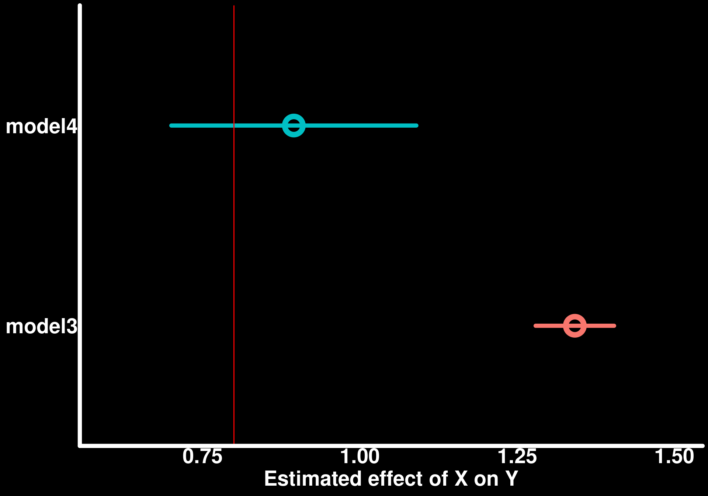
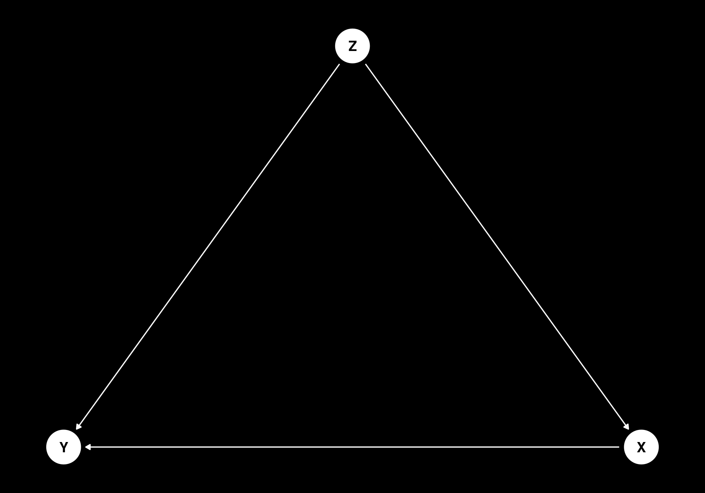
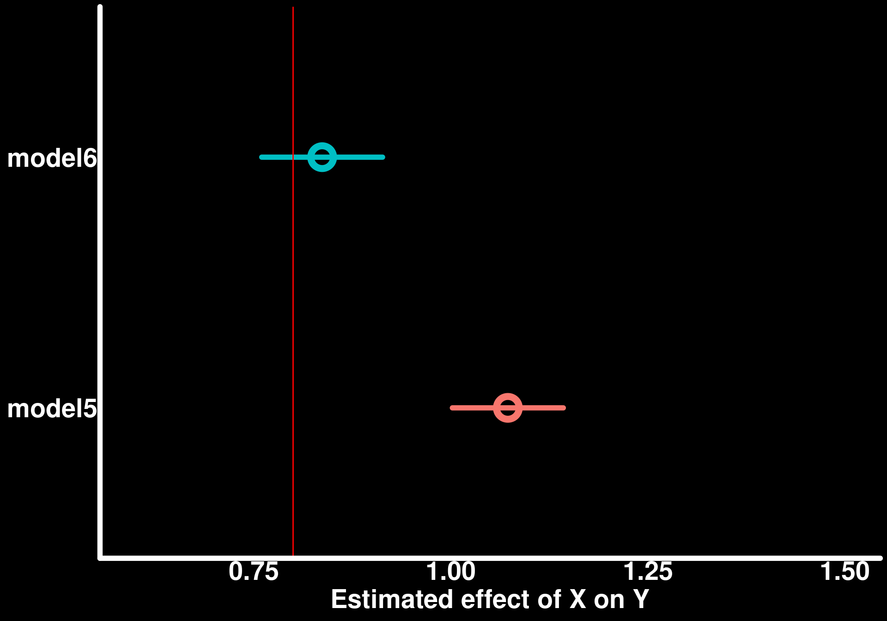
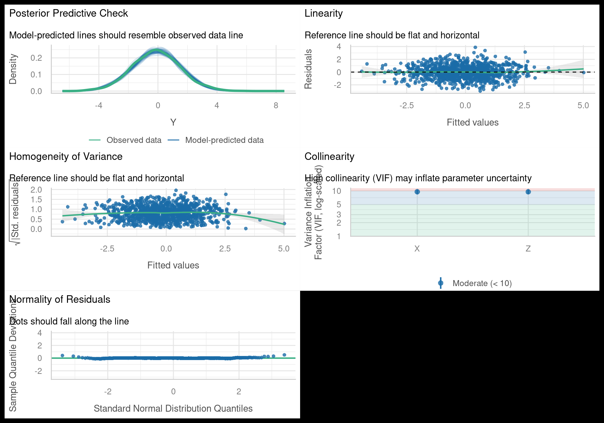
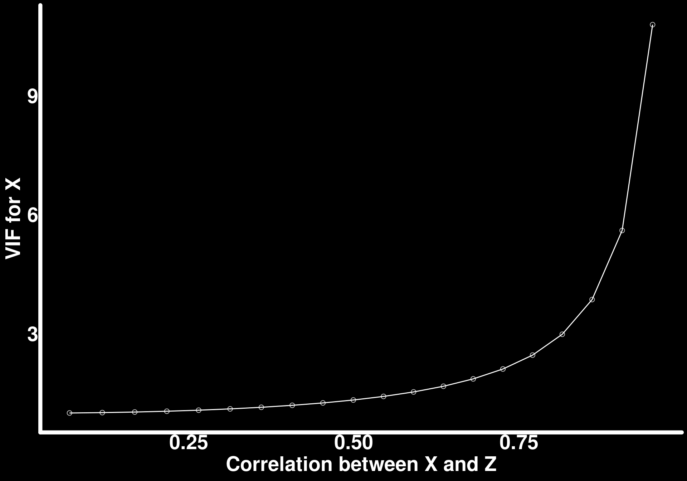
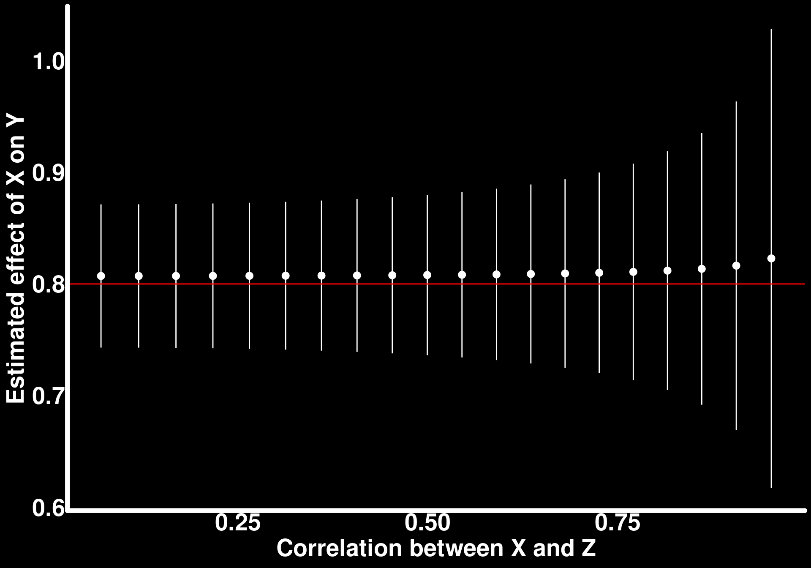
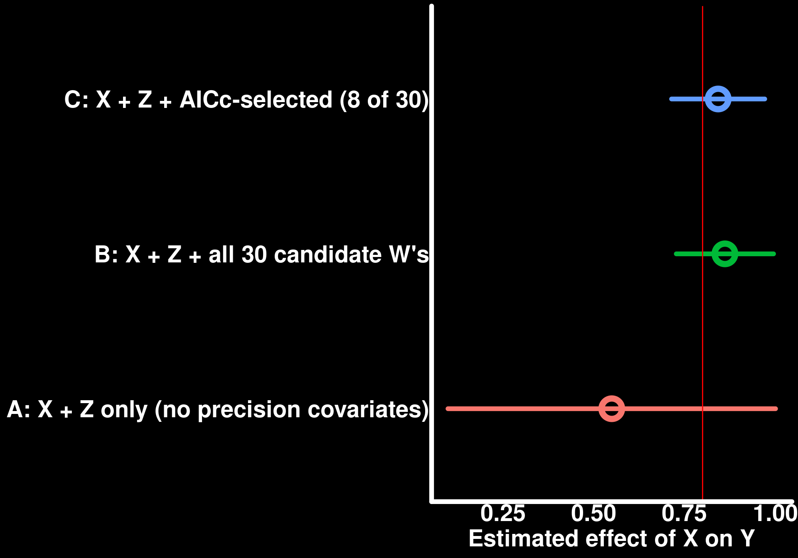

![]()
library(tidyverse) # Data manipulation and plotting
library(tidylog) # Print a log of data manipulations done with tidyverse
library(glmmTMB) # Generalized linear (mixed) models
library(marginaleffects) # Compute marginal/condition effects
library(patchwork) # Combine multiple plots
library(performance)
# Set ggplot2 theme
black_theme <- theme(
axis.line = element_line(linewidth = 2, lineend = "round", color = "white"),
panel.grid = element_blank(),
panel.background = element_rect(fill = "black", color = NA),
axis.ticks = element_blank(),
axis.text = element_text(size = 21, face = "bold", color = "white"),
axis.title = element_text(size = 21, face = "bold", color = "white"),
plot.title = element_text(size = 25, face = "bold", color = "white"),
plot.background = element_rect(fill = "black", color = NA),
legend.background = element_rect(fill = "black", color = NA),
legend.text = element_text(size = 21, color = "white"),
legend.title = element_text(size = 21, face = "bold", color = "white"),
legend.position = "bottom"
)
theme_set(black_theme)
# Set global default for geom_point shape
update_geom_defaults("point", list(shape = 1, size = 3, alpha = 0.8, color = "white"))
# silence marginaleffects warnings about glmmTMB
options(marginaleffects_safe = FALSE)
set.seed(333)types of effects DAGs model selection vs DAGS confounding g-computation counterfactuals propensity scores
In this post, I will cover the basics of causal inference in ecology, including the use of directed acyclic graphs (DAGs) to represent causal relationships, common issues regarding model selection, and the role of confounding variables. I will also discuss g-computation, counterfactuals, and propensity scores as methods for estimating causal effects. We will also cover effect types such as direct, indirect, total, and average causal effects. The intention is to help develop causal thinking into our quantitative analyses.
First off, let’s define different research objectives. One objective may be to explore a dataset to understand the relationships between variables. One may be interested in looking at how certain variables affect a certain response variable in order to generate new hypotheses about a given phenomenon. This kind of objective is often termed “exploratory analyses” and is often thought of as not needing causal thinking about the mechanisms of a given system which I would argue is completely wrong; how can we generate hypotheses from observed relationships without thinking about causes and their effects? Another objective may be to predict a response variable based on a set of predictor variables. For example, we may want to predict the distribution of a given species for a given set of predictor variable. In this case, it may not be necessary to understand the causal relationships leading to how a species is distributed across a landscape but thinking causally about what affects a species distribution may help us in determining what predictor variables to include in our model. Finally, we may be interested in estimating the causal effect of a given variable on a response variable. In this case, we are interested in understanding how a change in a given variable affects a response variable while holding all other variables constant. This is often the most difficult objective to achieve and requires careful consideration of the causal relationships between variables. In all cases, thinking causally about the relationships between variables is beneficial.
A causal effect is often thought of as the effect of a treatment on an outcome in the context of a randomized trial. For example, we may be interested in the effect of a given fertilizer on plant growth. In this case, the fertilizer is the treatment and plant growth is the outcome. If our study is well designed, we can estimate the causal effect of the fertilizer on plant growth by comparing the growth of plants that received the fertilizer to those that did not. However, in many cases, we are interested in estimating causal effects from observational data where we do not have control over the treatment assignment. In these cases, we need to be careful about confounding variables that may affect both the treatment and the outcome. For example, if we are interested in the effect of a given fertilizer on plant growth but we do not control for soil quality, we may find that plants that received the fertilizer grew better than those that did not, but this may be due to differences in soil quality rather than the effect of the fertilizer. In this case, soil quality is a confounding variable that needs to be accounted for in our analysis.
TBC
Example of confounding:
data1 <- tibble(
Z = rnorm(1000, mean = 0, sd = 1),
X = 0.5 * Z + rnorm(1000, mean = 0, sd = 1),
Y = 0.5 * Z + rnorm(1000, mean = 0, sd = 1)
)
model1 <- glmmTMB(Y ~ X, family = gaussian, data = data1)
model2 <- glmmTMB(Y ~ X + Z, family = gaussian, data = data1)
summary(model1) Family: gaussian ( identity )
Formula: Y ~ X
Data: data1
AIC BIC logLik -2*log(L) df.resid
3081.8 3096.5 -1537.9 3075.8 997
Dispersion estimate for gaussian family (sigma^2): 1.27
Conditional model:
Estimate Std. Error z value Pr(>|z|)
(Intercept) 0.02621 0.03563 0.736 0.462
X 0.24299 0.03126 7.774 7.63e-15 ***
---
Signif. codes: 0 '***' 0.001 '**' 0.01 '*' 0.05 '.' 0.1 ' ' 1summary(model2) Family: gaussian ( identity )
Formula: Y ~ X + Z
Data: data1
AIC BIC logLik -2*log(L) df.resid
2892.8 2912.4 -1442.4 2884.8 996
Dispersion estimate for gaussian family (sigma^2): 1.05
Conditional model:
Estimate Std. Error z value Pr(>|z|)
(Intercept) 0.022600 0.032384 0.698 0.485
X 0.007153 0.032733 0.219 0.827
Z 0.544180 0.037510 14.507 <2e-16 ***
---
Signif. codes: 0 '***' 0.001 '**' 0.01 '*' 0.05 '.' 0.1 ' ' 1We can see that in model 1, the effect of X on Y is different from zero, but in model 2, when we include Z as a covariate, the effect of X on Y is no longer considered significant. This is an example of confounding, where Z is a confounding variable that affects both X and Y and thus creates a spurious association between X and Y. In this case, we need to account for Z in our analysis in order to accurately estimate the causal effect of X on Y.
Let’s now simulate a dataset in which Z causes both X and Y and X has an effect on Y. In this case, we will see that when we include Z as a covariate in our model, the effect of X on Y is still different from zero, indicating that X has a causal effect on Y.
A note on how X and Z are simulated below: rather than generating X as b * Z + rnorm(...) for some coefficient b, we fix Var(X) = 1 and set the correlation between X and Z directly, i.e. X = rho * Z + sqrt(1 - rho^2) * rnorm(...). This matters because the precision of the estimated slope of X depends on both the correlation between X and Z (captured by the VIF) and the raw variance of X itself; increasing b increases both at once, so a comparison across different values of b confounds “more collinear” with “more variable X” and the confidence interval widths don’t cleanly track VIF. Fixing Var(X) = 1 isolates the effect of correlation alone, so differences in confidence interval width below can be attributed to collinearity rather than to a side effect of how X happened to be generated.
effect_x_y <- 0.8
rho_high <- 0.95
data2 <- tibble(
Z = rnorm(1000, mean = 0, sd = 1),
X = rho_high * Z + sqrt(1 - rho_high^2) * rnorm(1000, mean = 0, sd = 1),
Y = effect_x_y * X + 0.5 * Z + rnorm(1000, mean = 0, sd = 1)
)
model3 <- glmmTMB(Y ~ X, family = gaussian, data = data2)
model4 <- glmmTMB(Y ~ X + Z, family = gaussian, data = data2)
# extract the slopes of X from both models using marginaleffects
bind_rows(
slopes(model3, variables = "X", newdata = "mean") |> as_tibble() |> mutate(model = "model3"),
slopes(model4, variables = "X", newdata = "mean") |> as_tibble() |> mutate(model = "model4")
) |>
ggplot(aes(x = estimate, xmax = conf.high, xmin = conf.low, y = model, color = model)) +
geom_pointrange(size = 1.5,
lineend = "round",
linewidth = 2,
pch = 21,
stroke = 4) +
geom_vline(xintercept = effect_x_y, color = "red") +
labs(x = "Estimated effect of X on Y", y = NULL) +
coord_cartesian(xlim = c(0.6, 1.5)) +
theme(legend.position = "none")mutate: new variable 'model' (character) with one unique value and 0% NA
mutate: new variable 'model' (character) with one unique value and 0% NA
We can see here that adding Z as a covariate helps in estimating the true effect of X on Y. Excluding Z from the model because it is not a variable that interests us leads to erroneous conclusions.
Multicolinearity: In the simulation above, X and Z are highly correlated. Let’s check our model using the check_model function from the performance package to see if there are any issues with multicolinearity.
check_model(model4)`check_outliers()` does not yet support models of class `glmmTMB`.
I often get questions regarding multicolinearity and if this causes issues with estimating causal effects. Multicolinearity is a statistical phenomenon in which two or more predictor variables in a multiple regression model are highly correlated. This can lead to issues with estimating the coefficients of the predictor variables, as it becomes difficult to determine the individual effect of each predictor on the response variable. However, multicolinearity does not affect the ability to estimate causal effects, as long as the model is correctly specified and all relevant confounding variables are included. From the plot above, we can see that the effect of X on Y is estimated with more uncertainty (wider confidence intervals) in model 4 compared to model 3 but at least the confidence intervals cover the true simulated value compared to the confidence intervals in model 3.
Let’s look at the width of the confidence intervals if we simulate a dataset in which X and Z are correlated but to a lesser degree.
rho_low <- 0.5
data3 <- tibble(
Z = rnorm(1000, mean = 0, sd = 1),
X = rho_low * Z + sqrt(1 - rho_low^2) * rnorm(1000, mean = 0, sd = 1),
Y = effect_x_y * X + 0.5 * Z + rnorm(1000, mean = 0, sd = 1)
)
model5 <- glmmTMB(Y ~ X, family = gaussian, data = data3)
model6 <- glmmTMB(Y ~ X + Z, family = gaussian, data = data3)
# extract the slopes of X from both models using marginaleffects
bind_rows(
slopes(model5, variables = "X", newdata = "mean") |> as_tibble() |> mutate(model = "model5"),
slopes(model6, variables = "X", newdata = "mean") |> as_tibble() |> mutate(model = "model6")
) |>
ggplot(aes(x = estimate, xmax = conf.high, xmin = conf.low, y = model, color = model)) +
geom_pointrange(size = 1.5,
lineend = "round",
linewidth = 2,
pch = 21,
stroke = 4) +
geom_vline(xintercept = effect_x_y, color = "red") +
labs(x = "Estimated effect of X on Y", y = NULL) +
coord_cartesian(xlim = c(0.6, 1.5)) +
theme(legend.position = "none")mutate: new variable 'model' (character) with one unique value and 0% NA
mutate: new variable 'model' (character) with one unique value and 0% NA
We can see here that the confidence interval for model 6 is narrower than that of model 4 and still covers the true value.
check_model(model6)`check_outliers()` does not yet support models of class `glmmTMB`.
For fun, let’s run a quick sensitivity analysis to see how the effect of X on Y changes as we vary the correlation between X and Z. We will simulate datasets with different levels of correlation between X and Z and estimate the effect of X on Y in each case. We will also look at the VIF values for each model to see how they change as we vary the correlation between X and Z.
rhos <- seq(0, 0.95, by = 0.05)
sensitivity_results <- map_dfr(rhos, function(rho) {
set.seed(333)
Z <- rnorm(1000, mean = 0, sd = 1)
X <- rho * Z + sqrt(1 - rho^2) * rnorm(1000, mean = 0, sd = 1)
Y <- effect_x_y * X + 0.5 * Z + rnorm(1000, mean = 0, sd = 1)
dat <- tibble(X = X, Y = Y, Z = Z)
mod <- glmmTMB(Y ~ X + Z, family = gaussian, data = dat)
slope <- slopes(mod, variables = "X", newdata = "mean") |> as_tibble()
vif_val <- performance::check_collinearity(mod) |>
as_tibble() |>
filter(Term == "X") |>
pull(VIF)
tibble(
rho = rho,
cor_x_z = cor(dat$X, dat$Z),
estimate = slope$estimate,
conf.low = slope$conf.low,
conf.high = slope$conf.high,
vif = vif_val
)
})filter: removed one row (50%), one row remaining
filter: removed one row (50%), one row remaining
filter: removed one row (50%), one row remaining
filter: removed one row (50%), one row remaining
filter: removed one row (50%), one row remaining
filter: removed one row (50%), one row remaining
filter: removed one row (50%), one row remaining
filter: removed one row (50%), one row remaining
filter: removed one row (50%), one row remaining
filter: removed one row (50%), one row remaining
filter: removed one row (50%), one row remaining
filter: removed one row (50%), one row remaining
filter: removed one row (50%), one row remaining
filter: removed one row (50%), one row remaining
filter: removed one row (50%), one row remaining
filter: removed one row (50%), one row remaining
filter: removed one row (50%), one row remaining
filter: removed one row (50%), one row remaining
filter: removed one row (50%), one row remaining
filter: removed one row (50%), one row remainingggplot(sensitivity_results, aes(x = cor_x_z, y = estimate, ymin = conf.low, ymax = conf.high)) +
geom_pointrange(color = "white") +
geom_hline(yintercept = effect_x_y, color = "red") +
labs(x = "Correlation between X and Z", y = "Estimated effect of X on Y")
ggplot(sensitivity_results, aes(x = cor_x_z, y = vif)) +
geom_point(size = 2) +
geom_line(color = "white") +
labs(x = "Correlation between X and Z", y = "VIF for X")
As the correlation between X and Z increases, the point estimate of the effect of X on Y stays close to the true simulated value (red line), but the confidence interval widens noticeably once the correlation exceeds roughly 0.7–0.8 — consistent with the earlier observation that multicollinearity inflates uncertainty without necessarily biasing the estimate. The VIF for X increases sharply as the correlation grows, reflecting the standard relationship \[\text{VIF} = \frac{1}{1 - R^2}\] between a predictor and the other covariates in the model.
It’s worth being explicit about why this VIF simulation matters for causal inference specifically, rather than being a general regression caveat. In these examples, Z is a confounder: a common cause of both X and Y. Omitting Z from the model biases the estimated effect of X on Y, so Z must be included to recover the causal effect — but a confounder, almost by definition, shares variance with the treatment X, since it causes both X and Y. That means conditioning on a confounder strongly correlated with the treatment is exactly the situation that produces high VIF. The two consequences of this are distinct and call for different responses: omitting Z introduces bias (and no amount of data fixes a biased estimate), while including a highly collinear Z costs precision (wider confidence intervals, but the estimate remains correct on average). High VIF is therefore not a reason to drop a confounder from the model; it is a signal that the resulting effect estimate, while unbiased, will be noisier, and that more data, better measurement, or additional precision covariates (as in the next example) may be needed to estimate it tightly.
Collinearity between X and Z is not the only thing that affects the precision of our estimate of the effect of X on Y — so does how much of the residual variance in Y we can explain. Let’s simulate a scenario where X and Z are highly correlated (as before), but we also have two additional predictors, W1 and W2, that affect Y but are unrelated to X and Z (and so are not confounders of the X–Y relationship, and are not required to be included for unbiasedness). Including these predictors in the model does not change the true causal effect of X on Y, but it does soak up residual variance in Y that would otherwise show up as noise, which should narrow the confidence interval for the slope of X.
rho_high <- 0.95
n <- 1000
data4 <- tibble(
Z = rnorm(n, mean = 0, sd = 1),
X = rho_high * Z + sqrt(1 - rho_high^2) * rnorm(n, mean = 0, sd = 1),
W1 = rnorm(n, mean = 0, sd = 1),
W2 = rnorm(n, mean = 0, sd = 1),
Y = effect_x_y * X + 0.5 * Z + 2 * W1 + 2 * W2 + rnorm(n, mean = 0, sd = 1)
)
model7 <- glmmTMB(Y ~ X + Z, family = gaussian, data = data4)
model8 <- glmmTMB(Y ~ X + Z + W1 + W2, family = gaussian, data = data4)
# extract the slopes of X from both models using marginaleffects
bind_rows(
slopes(model7, variables = "X", newdata = "mean") |> as_tibble() |> mutate(model = "model7 (without W1, W2)"),
slopes(model8, variables = "X", newdata = "mean") |> as_tibble() |> mutate(model = "model8 (with W1, W2)")
) |>
ggplot(aes(x = estimate, xmax = conf.high, xmin = conf.low, y = model, color = model)) +
geom_pointrange(size = 1.5,
lineend = "round",
linewidth = 2,
pch = 21,
stroke = 4) +
geom_vline(xintercept = effect_x_y, color = "red") +
labs(x = "Estimated effect of X on Y", y = NULL) +
theme(legend.position = "none")mutate: new variable 'model' (character) with one unique value and 0% NA
mutate: new variable 'model' (character) with one unique value and 0% NA
Both models give estimates consistent with the true simulated effect, but the confidence interval for model 8, which includes W1 and W2, is noticeably narrower than that of model 7. This illustrates that improving the precision of a causal effect estimate is not only about addressing confounding (which requires including Z): adding predictors of Y that are unrelated to the treatment of interest, sometimes called “precision covariates,” can meaningfully tighten the confidence interval around the effect of interest without introducing bias, because they absorb residual variance in Y that would otherwise be attributed to noise.
A natural next question is how many precision covariates to add. Including every candidate predictor of Y risks overfitting, especially as the number of candidates grows relative to the sample size, which can produce unstable coefficient estimates and (for the effect of interest) a confidence interval that is too narrow or an estimate that does not generalize beyond the sample. The usual solution in a regularized regression framework (e.g. ridge or lasso) is to shrink the coefficients of weakly-supported covariates toward zero. glmmTMB does not have a built-in regularization method, so instead we use a simple forward stepwise selection based on AICc (the small-sample-corrected version of AIC, more appropriate here given the number of candidate covariates relative to n): starting from a model with only X and Z (always retained), we repeatedly add whichever candidate precision covariate improves AICc the most, stopping once no addition improves it further.
It is important to be precise about what this kind of model selection is, and is not, for. Z is a confounder, identified from our causal assumptions about the data-generating process (as represented, for example, by a DAG), not from a model-fit statistic — it must stay in every candidate model regardless of whether it improves AICc, or we reintroduce the omitted-confounder bias from the very first simulation in this post. The W’s, by contrast, are precision covariates: by construction they do not cause X and are not caused by X or Y, so excluding any of them from the model does not bias the estimated effect of X, only its precision. Model selection is therefore only applied to the candidate set of precision covariates, and is never used to decide whether a variable identified as a confounder belongs in the model. More generally, any model comparison or selection procedure should operate only over variables whose inclusion or exclusion is already justified as compatible with the causal question being asked; it should not be used to choose between models that imply different causal assumptions (e.g. with and without a known confounder).
forward_select_glmmTMB <- function(data, y, force_in, candidates, max_steps = Inf) {
selected <- force_in
remaining <- candidates
form <- as.formula(paste(y, "~", paste(selected, collapse = " + ")))
best_aicc <- AICcmodavg::AICc(glmmTMB(form, family = gaussian, data = data))
step <- 0
repeat {
step <- step + 1
if (length(remaining) == 0 || step > max_steps) break
aiccs <- map_dbl(remaining, function(v) {
form_v <- as.formula(paste(y, "~", paste(c(selected, v), collapse = " + ")))
AICcmodavg::AICc(glmmTMB(form_v, family = gaussian, data = data))
})
if (min(aiccs) < best_aicc) {
best_var <- remaining[which.min(aiccs)]
selected <- c(selected, best_var)
remaining <- setdiff(remaining, best_var)
best_aicc <- min(aiccs)
} else {
break
}
}
selected
}Let’s simulate a dataset in which Z is a confounder of X and Y, as before, and we additionally have 30 candidate precision covariates (W1-W30), only 5 of which actually affect Y, and all of which are unrelated to X and Z (so none of them are confounders, and none are required for unbiasedness). We will compare three models, all of which retain Z as a confounder: one with X and Z alone, one with X, Z, and all 30 candidate covariates, and one with X, Z, and only the covariates selected by forward AICc selection (with X and Z always forced in).
n <- 200
k <- 30
n_true <- 5
Z <- rnorm(n)
X <- 0.5 * Z + rnorm(n)
W <- matrix(rnorm(n * k), nrow = n, ncol = k)
colnames(W) <- paste0("W", seq_len(k))
# only the first 5 W's truly affect Y; the remaining 25 are noise candidates
gamma <- c(rep(1.5, n_true), rep(0, k - n_true))
Y <- effect_x_y * X + 0.5 * Z + as.numeric(W %*% gamma) + rnorm(n)
dat_wide <- as_tibble(cbind(X = X, Y = Y, Z = Z, W))
modA <- glmmTMB(Y ~ X + Z, family = gaussian, data = dat_wide)
form_all <- as.formula(paste("Y ~ X + Z +", paste(colnames(W), collapse = " + ")))
modB <- glmmTMB(form_all, family = gaussian, data = dat_wide)
selected_vars <- forward_select_glmmTMB(dat_wide, "Y", force_in = c("X", "Z"), candidates = colnames(W))
form_sel <- as.formula(paste("Y ~", paste(selected_vars, collapse = " + ")))
modC <- glmmTMB(form_sel, family = gaussian, data = dat_wide)
# extract the slopes of X from all three models using marginaleffects
bind_rows(
slopes(modA, variables = "X", newdata = "mean") |> as_tibble() |> mutate(model = "A: X + Z only (no precision covariates)"),
slopes(modB, variables = "X", newdata = "mean") |> as_tibble() |> mutate(model = paste0("B: X + Z + all ", k, " candidate W's")),
slopes(modC, variables = "X", newdata = "mean") |> as_tibble() |> mutate(model = paste0("C: X + Z + AICc-selected (", length(selected_vars) - 2, " of ", k, ")"))
) |>
ggplot(aes(x = estimate, xmax = conf.high, xmin = conf.low, y = model, color = model)) +
geom_pointrange(size = 1.5,
lineend = "round",
linewidth = 2,
pch = 21,
stroke = 4) +
geom_vline(xintercept = effect_x_y, color = "red") +
labs(x = "Estimated effect of X on Y", y = NULL) +
theme(legend.position = "none")mutate: new variable 'model' (character) with one unique value and 0% NA
mutate: new variable 'model' (character) with one unique value and 0% NA
mutate: new variable 'model' (character) with one unique value and 0% NA
All three models retain Z and give estimates consistent with the true effect, but model A (no precision covariates) has the widest confidence interval, since it leaves all the variance due to W1-W5 unexplained in the residual. Model B, with all 30 candidate covariates, narrows the interval substantially, but does so by estimating 30 additional coefficients from only 200 observations — a considerable overfitting risk in general, even where it happens to work out here. Model C, using only the covariates selected by forward AICc selection (which, in this simulation, recovers most of the 5 true covariates along with a few spurious ones, with Z and X forced in at every step), achieves comparable precision to model B while estimating far fewer parameters. This illustrates the tradeoff at the center of adding precision covariates: including candidates indiscriminately risks overfitting, while a principled, even if simple, selection step can recover most of the available precision gain with a considerably more parsimonious model — so long as that selection step is restricted to covariates whose inclusion does not depend on our causal assumptions, leaving variables like Z, whose role is determined by the DAG rather than by model fit, untouched.